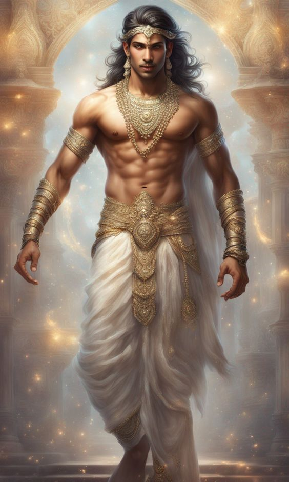

Weapon

Skill
Nakula, the fourth of the Pandavas, was known for his exceptional **skills in swordsmanship and horse training**. He was also an expert in medicine, particularly in treating animals, and had deep knowledge of Ayurveda. Renowned for his beauty and charm, Nakula was often praised for his humility, discipline, and devotion to his brothers and dharma.
War
In the **Kurukshetra war**, Nakula fought bravely on the side of the Pandavas. He defeated several powerful warriors from the Kaurava army and demonstrated great valor and loyalty throughout the war. Though not as aggressive as Bhima or Arjuna, Nakula’s discipline, precision, and defensive skills made him an important part of the Pandava forces. His courage and sense of duty were unshaken even in the most challenging moments of the war.
Character
Nakula was the son of **King Pandu** and **Queen Madri**, born through the blessings of the Ashwini Kumaras, the twin gods of medicine and beauty. He was gentle, modest, and devoted to truth. Despite his extraordinary looks, Nakula never showed arrogance or pride. His kindness, inner strength, and respect for elders made him one of the most admired Pandavas. Nakula symbolized the virtue of humility combined with excellence.
Family Details
Nakula was the twin brother of **Sahadeva**, and both were sons of **Madri** and **Pandu**. He was married to **Karenumati**, the princess of Chedi, and they had a son named **Niramitra**. Nakula shared a close bond with his brothers and played a key role in supporting Yudhishthira during the Pandavas’ exile and their return to power.